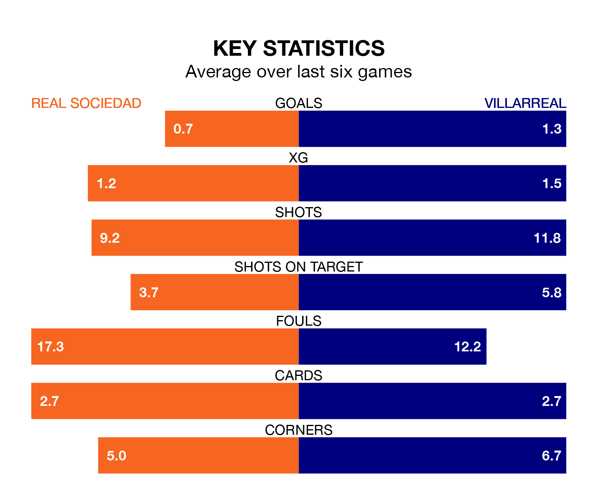

Villarreal face Real Sociedad on Friday seeking to protect their long unbeaten run in La Liga.
Villarreal are unbeaten in five, with one win and four draws, ahead of the 8pm kick-off.
They face a La Real team who have won two and drawn two over the same number of games.
With Álex Remiro between the sticks, La Real can rely on one of the league's safest pair of hands. He has kept 10 clean sheets in his 24 appearances this season, and only one other 'keeper – Athletic Club Bilbao's Unai Simón – has been able to prevent the opposition scoring on more occasions in La Liga.
In Villarreal's net, Filip Jörgensen has three clean sheets in 25 games. He has conceded a goal every 50 minutes, nearly three times as often as the 140 minutes between goals for Remiro Gargallo.
With 35 goals in 25 games so far this season, the visitors are scoring more than average in the league with 1.4 goals per game. But they are conceding more than average too, letting in 47 goals at a rate of 1.9 per game.
La Real are also above average scorers, with 1.4 goals per game, compared to a league average of 1.3. They have conceded 0.9 goals per game.
In the last 10 years, La Real and Villarreal have played each other on 24 occasions. La Real won seven of them, Villarreal 11, and they drew six times.
On average, la Real scored 1.1 goals and Villarreal 1.4 in those matches.
Their last meeting was on December 9, when La Real won 3-0 away.
The home team are sixth in the table after 25 games, of which they have won 10 and drawn 10, earning 40 points.
Villarreal are seven places behind La Real in 13th, with six wins and eight draws putting them on 26 points.
La Real's last match was on Sunday, a 2-1 win against RCD Mallorca, with Mikel Merino and Takefusa Kubo getting the goals for la Real.
Villarreal drew 1-1 with Getafe CF last time out, on February 16, with Alberto Moreno on the scoresheet.
Friday's match will be refereed by Javier Iglesias Villanueva, who has taken charge of 13 La Liga games so far this season, issuing one red card and booking 58 players. He has awarded four penalties.
The last La Real game Iglesias Villanueva refereed was a 0-0 away draw with Cádiz on December 21. His last Villarreal match was their 3-0 loss away at UD Las Palmas on January 13.
Updated: 10:08 (UTC), 23/02/24